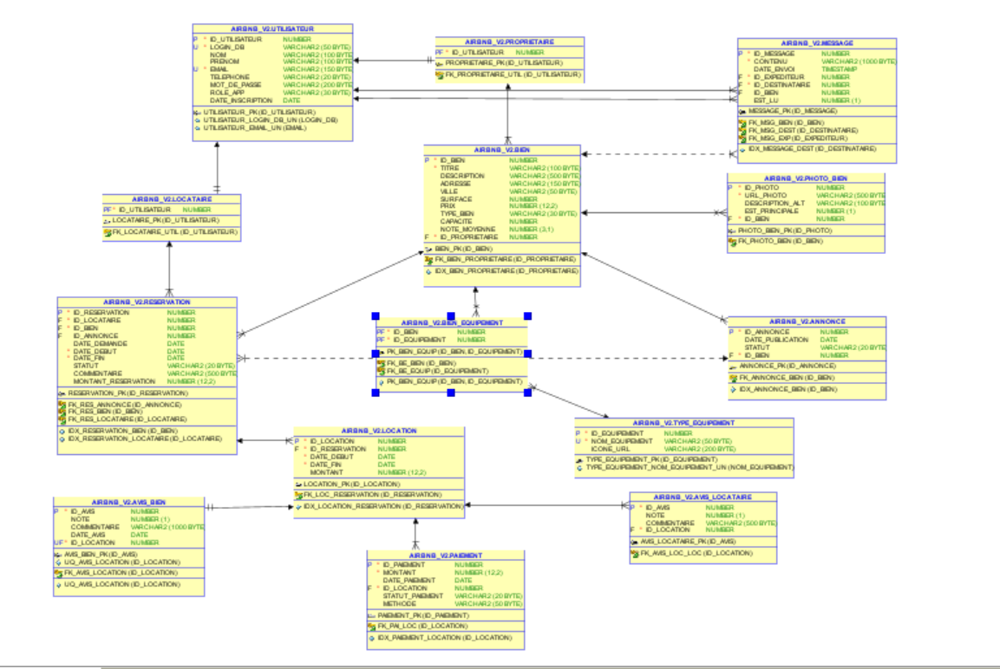

Bien Immobilier — Plateforme de Location
Plateforme web de location développée avec Flask et Oracle permettant la gestion complète du cycle : publication, réservation, paiement et avis clients.
Vue d’ensemble
Cette application permet la gestion complète des locations immobilières : consultation des biens, réservation, validation par le propriétaire, paiement et avis clients.
Le projet met l’accent sur la conception de base de données, la cohérence transactionnelle et la sécurité des données.
Architecture du système
- Couche présentation : HTML / CSS / Tailwind
- Couche applicative : Flask (authentification, sessions, routes)
- Couche logique métier : PL/SQL
- Couche données : Oracle Database
Fonctionnalités
- Consultation des biens
- Recherche interactive
- Visualisation des disponibilités
- Réservation de logements
- Paiement
- Avis clients
- Dashboard locataire
- Dashboard propriétaire
Couche Données (Oracle)
Base relationnelle normalisée contenant : utilisateurs, biens, réservations, locations, paiements et avis.

Problèmes techniques traités
Les règles critiques sont implémentées directement dans Oracle afin de garantir la cohérence et la sécurité des données, indépendamment de l’application web.
-
Gestion de l’Overbooking —
creerReservation&verifierDisponibilite
Le défi principal était d'assurer l'atomicité des réservations. La création d’une réservation passe par la procédure creerReservation qui appelle la fonction verifierDisponibilite afin de détecter les chevauchements de dates. Cela garantit qu’aucun bien ne peut être loué deux fois simultanément, même en cas de requêtes concurrentes. -
Sécurité Anti-Fraude —
trg_no_update_paiement_if_reussi
Pour sécuriser les flux financiers, un verrou d’immuabilité a été implémenté via le trigger trg_no_update_paiement_if_reussi. Une fois qu’un paiement est validé, toute tentative de modification est bloquée directement par le moteur Oracle, rendant la plateforme résistante aux manipulations post-transaction. -
Contrôle d'Accès de Données —
trg_secu_bien_owner
Le défi était de garantir que les biens immobiliers ne puissent être modifiés ou supprimés que par leurs propriétaires légitimes. Le trigger trg_secu_bien_owner vérifie l’identité de l’utilisateur Oracle avant chaque modification ou suppression, empêchant toute usurpation via l’interface web ou des requêtes directes. -
Automatisation des Métriques —
trg_maj_note_bien&majNoteMoyenne
Afin d’optimiser les performances, le recalcul des notes a été automatisé : à chaque nouvel avis, le trigger trg_maj_note_bien déclenche la procédure majNoteMoyenne qui met à jour la note moyenne du bien. Les scores restent toujours à jour sans calcul côté application. -
Cohérence transactionnelle
Les opérations critiques comme la réservation et le paiement sont exécutées dans des transactions Oracle, garantissant la cohérence des données même en cas d’erreur ou d’interruption. -
Intégration Flask – Oracle
L’application utilisepython-oracledbpour exécuter les requêtes SQL et les objets PL/SQL, assurant une communication directe et fiable entre le backend et la base de données.
Choix techniques
- Oracle Database pour la fiabilité transactionnelle
- Flask pour le backend
- PL/SQL pour la logique métier
- Architecture en couches
Résultats
- Application web fonctionnelle
- Base de données robuste
- Système sécurisé
- Gestion complète des locations
Démonstration
Vidéo :
Voir la vidéo de démonstrationCode source GitHub :
Voir le code sur GitHub